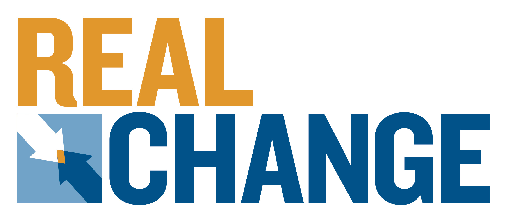
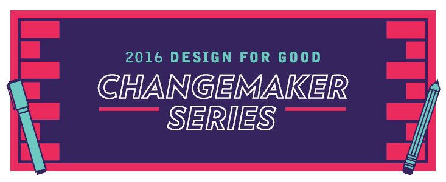
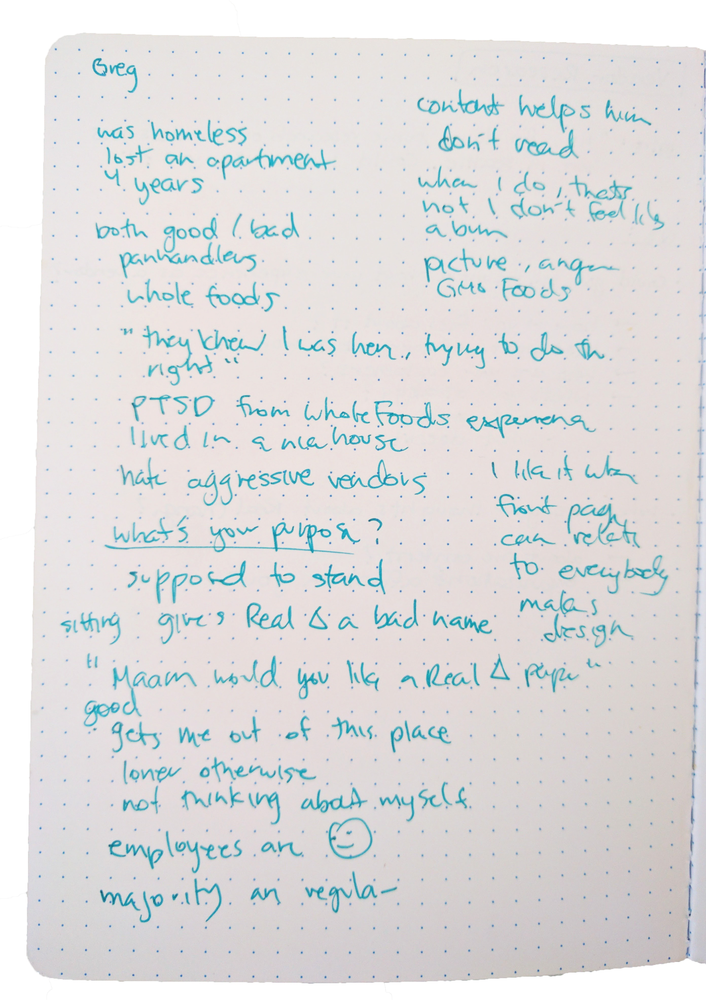
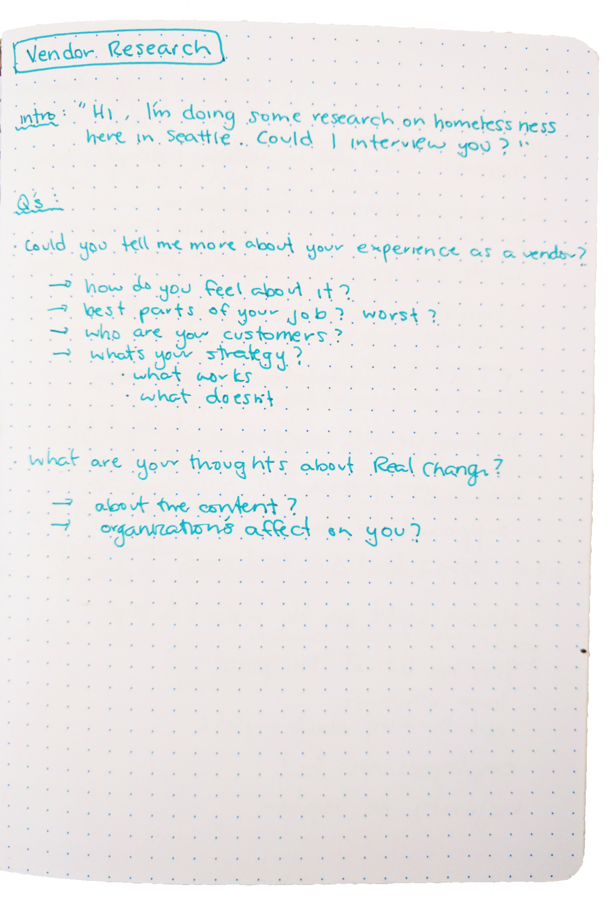
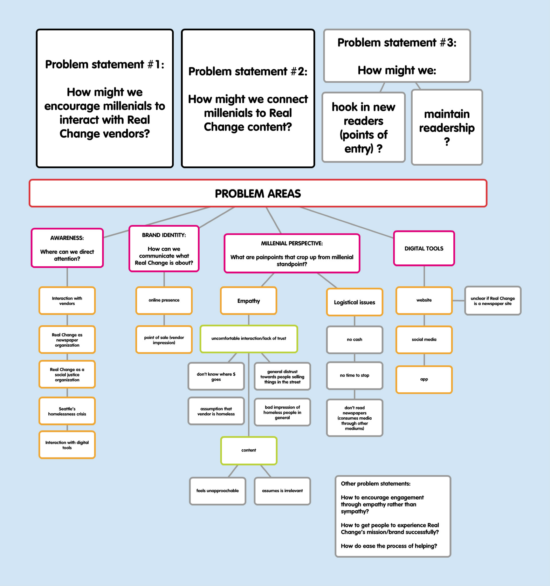
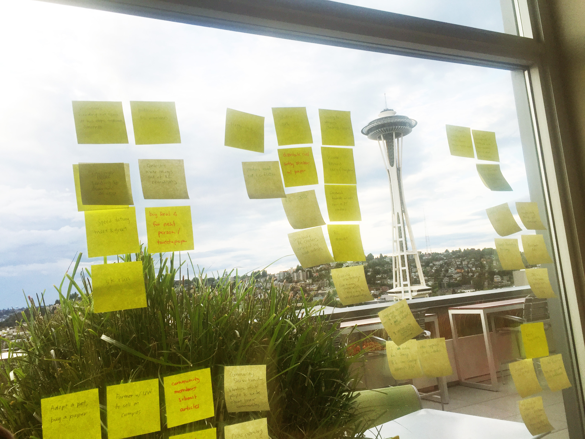

Real Change News is a homeless empowerment project. They produce an award-winning social justice newspaper and provide low-barrier income opportunities to homeless or low-income vendors.
This project is a part of the 2016 Changemaker Series run by AIGA's Design for Good program.


How might we increase readership and correct misperceptions of content?
We sought to understand the following:
To do so, we conducted 6 interviews with vendors and wrapped our findings in a SWOT analysis, which can be found here.


Our background research led us to narrow down our target demographic to millennials. Thus, our next step was to understand millennial attitudes and behaviors surrounding news consumption and community engagement. To do so, we conducted 22 interviews and gathered 35 survey responses. Our main finding was that
millennials want to engage but may not know how to.
We realized there were two distinct facets to our initial problem statement, which are
In order to understand opportunities for intervention, we developed personas and mapped out user pain points and problem implications.

We conducted two ideation sessions based on our research. An affinity analysis defined the areas where we could make impact.

I prototyped the landing page.
(while asking the following questions)
For the landing page, I mocked up five wireframes that vary in purpose and message.